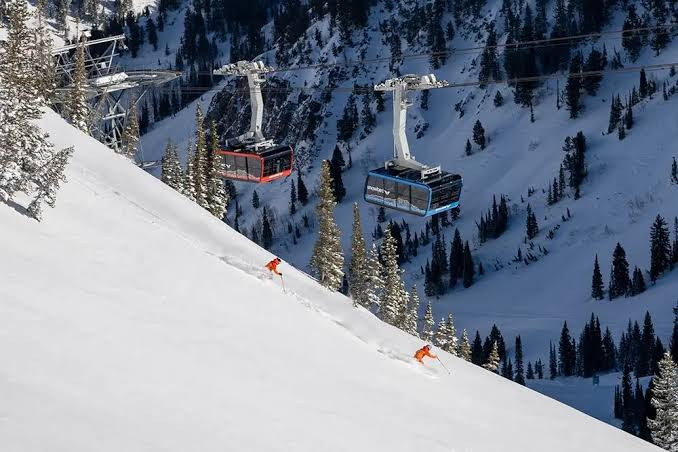

Environment & Chute Geography

Snowbird is uniquely positioned within Little Cottonwood Canyon, renowned globally for its extreme terrain matrix, steep vertical drops, and consistent, high-density dry Wasatch powder distributions. The media below highlights the operational environment in real-time:
Interactive Tool: Try out the custom Snowbird Powder Advisor Web App.
Operational Metric Frameworks
The following nested structures catalog the physical assets, lift infrastructure arrays, and operational bounds defining the resort layout:
- Geographic Boundary Specifications:
- Average Annual Snowfall Level: 500+ Inches
- Total Skiable Operational Boundary: 2,500 Acres
- Maximum Continuous Vertical Drop: 3,240 Feet
- Mechanical Transit Infrastructure:
- The Iconic Aerial Tram (Direct transit line to Hidden Peak)
- Mineral Basin Express (High-speed detachables serving the back bowl)
- Gadzoom & Peruvian Express Quad Arrays (Lower mountain network anchors)
- Critical Technical Terrain Chutes:
- The Cirque Traverse Drop Zones
- Regulator Johnson Chute Pathway
- Dalton's Draw Outflow Line
Snowfall Analytics Workspace
This interactive database module pulls records live from public data repositories, tracking season metrics across major operational centers: